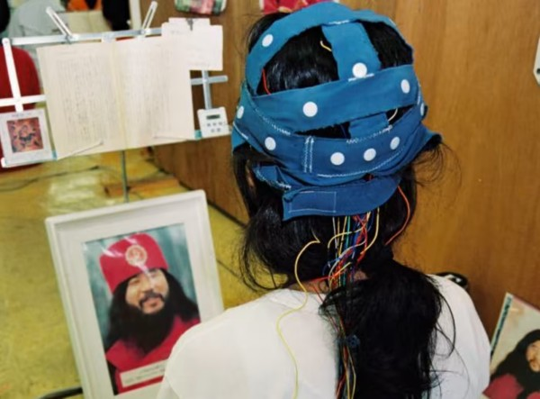

An Aum Shinrikyo follower mediates at the cult's camp near Mount Fuji in 1995, wearing a headset supposed to emit leader Shoko Asahara's brain waves. Source: https://asia.nikkei.com/Politics/Executions-can-t-erase-Japanese-death-cult-s-dark-legacy
And today I find same class of device on market, hope it is only fake for money... https://choosemuse.com/muse-2/
An info from another media source https://www.fastcompany.com/3036390/how-i-wore-a-brainwave-reading-headset-for-a-week-and-learned-to-calm-my-mind
Scientology in some place has use the same methods as ASH for creating new members...
WIP
Another cult leader, Fumihiro Joyu, now 35 years old, was a bright young engineer with the Japanese space program, specializing in artificial intelligence. He left that organization to go to work for Aum, where he very quickly rose through the ranks, ultimately to head the cult's operations in Russia. Joyu oversaw this important cult expansion, among other things "investing" as much as $12 million in the form of payoffs to well-placed officials. The cult's investment paid off with expedited access to office buildings, dormitories, and other facilities throughout Russia. At the time of the Tokyo subway attack, the cult's principle venture in Russia was the Moscow-Japan University, with headquarters in offices across the street from the Bolshoi Ballet. Their senior Russian partner in the university was a man by the name of Oleg Lobov, at that time also chairman of Russia's National Security Council and a close confidant of Boris Yeltsin.
WIP
About Scientology "Narconon" and other "educational" programs
As a result of research, it was found that the lectures themselves and the way they are conducted violate the fundamental European bioethical principles of informed consent and presumption of guilt (until the usefulness and safety of medical or psychological technology is proven, it is considered harmful and dangerous). In addition, according to scientists, Narconon lectures are psycho-manipulative in nature and contain pseudo-scientific concepts. Experts concluded that the program is the first step in the process of attracting young people to the Scientology sect. "In essence, this is a biomedical experiment not sanctioned by society"
WIP
Resources
https://commons.wikimedia.org/wiki/File:Description_of_Aum_Shinrikyo_sarin_truck.png
{kind=link}
https://капличка.com/sayentology-pronykly-v-ukrayinsku-sys-3/
https://core.ac.uk/download/pdf/10875087.pdf
https://www.jstor.org/stable/resrep06323?seq=1#metadata_info_tab_contents
https://en.wikipedia.org/wiki/Operation_Snow_White
https://wwwnc.cdc.gov/eid/article/5/4/99-0409_article
https://www.jstor.org/stable/resrep06323?seq=11#metadata_info_tab_contents
https://en.wikipedia.org/wiki/Narconon - like narcomafia